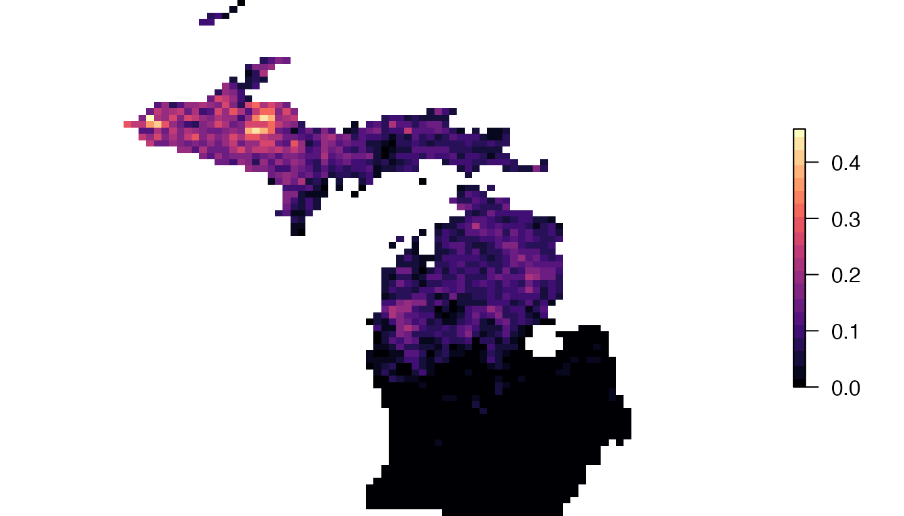
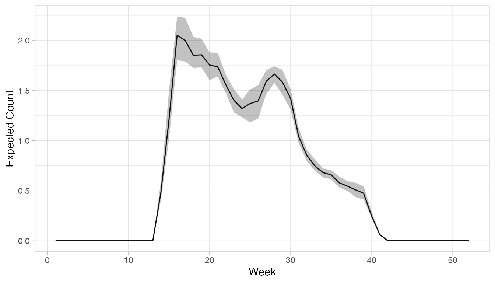
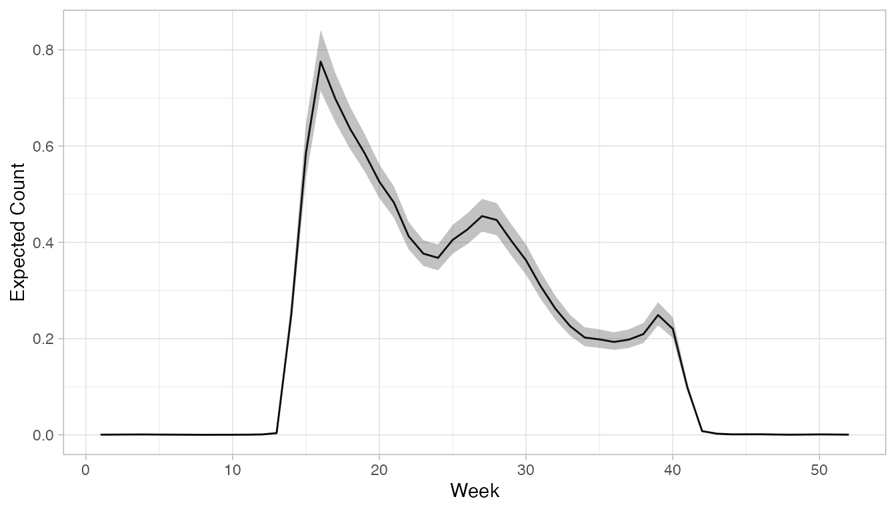

Introduction to loading, mapping, and plotting
Tom Auer, Daniel Fink
2019-02-26
Source:vignettes/ebirdst-intro-mapping.Rmd
ebirdst-intro-mapping.RmdLoading Rasters
Once you have downloaded a set of eBird Status and Trends products, one of the first tasks is to load one of the abundance or occurrence estimate and plot it. Each estimate is stored in a multi-band GeoTiff file and are most appropriately loaded as a RasterStack object. These “cubes” come with areas of predicted and assumed zeroes, such that any cells that are NA represent areas outside of the area of estimation. All cubes have 52 weeks, even if some weeks are all NA (such as those species that winter entirely outside of North America). The following code example shows how to load an estimate raster and assign names.
DATA ACCESS DETAILS TO BE PROVIDED VIA AWS IN THE NEXT 2-4 MONTHS
library(ebirdst)
library(raster)
library(sf)
library(rnaturalearth)
library(ggplot2)
library(viridisLite)
# DOWNLOAD DATA
# Currently, example data is available on a public s3 bucket. The following
# download_data() function copies the species results to a selected path and
# returns the full path of the results. Please note that the example_data is
# for Yellow-bellied Sapsucker and has the same run code as the real data,
# so if you download both, make sure you put the example_data somewhere else.
sp_path <- download_data(species = "example_data")
# load trimmed mean abundances and label dates
abunds <- load_raster("abundance_umean", path = sp_path)
# use parse_raster_dates() to get actual date objects for each layer
date_vector <- parse_raster_dates(abunds)
print(date_vector)
#> [1] "2016-01-04" "2016-01-11" "2016-01-18" "2016-01-25" "2016-02-01"
#> [6] "2016-02-08" "2016-02-15" "2016-02-22" "2016-03-01" "2016-03-08"
#> [11] "2016-03-15" "2016-03-22" "2016-03-29" "2016-04-05" "2016-04-12"
#> [16] "2016-04-19" "2016-04-26" "2016-05-03" "2016-05-10" "2016-05-17"
#> [21] "2016-05-24" "2016-05-31" "2016-06-07" "2016-06-14" "2016-06-21"
#> [26] "2016-06-28" "2016-07-06" "2016-07-13" "2016-07-20" "2016-07-27"
#> [31] "2016-08-03" "2016-08-10" "2016-08-17" "2016-08-24" "2016-08-31"
#> [36] "2016-09-07" "2016-09-14" "2016-09-21" "2016-09-28" "2016-10-05"
#> [41] "2016-10-12" "2016-10-19" "2016-10-26" "2016-11-02" "2016-11-09"
#> [46] "2016-11-16" "2016-11-23" "2016-11-30" "2016-12-07" "2016-12-14"
#> [51] "2016-12-21" "2016-12-28"Mapping Occurrence and Abundance
One of the most common tasks with eBird Status and Trends products is to make maps of occurrence and abundance. It is fast and easy to make maps with limited code, but to get ideal maps takes extra preparation. This section describes some functions in the ebirdst package intended to assist with mapping.
Projections
The sinusoidal projection that NASA provides MODIS data in, while functional because of its equal-area property, is not good for mapping because of the significant distortion of land masses across the globe. In general, there are few global equal-area projections, including, but not limited to, Lambert Azimuthal Equal Area, Goode Homolosine, Mollweide, and Equal Area Cylindrical. Of these, we have selected Mollweide, used in the remainder of this section, for its pleasing conformal properties across the globe, ease of projection configuration within R and its proj4string construction, and the ease of setting central meridians that best display the Western Hemisphere. It is worth noting that while projecting to a more visually appealing projection is ideal for mapping, it is not necessary for quantitative analysis of eBird Status and Trends products, for which purposes the results can be left in the original Sinusoidal projection.
# define mollweide projection
mollweide <- "+proj=moll +lon_0=-90 +x_0=0 +y_0=0 +ellps=WGS84"
# project single layer from stack to mollweide
week38_moll <- projectRaster(abunds[[38]], crs = mollweide, method = "ngb")
# optionally, you can project an entire stack, but it takes much longer
# abund_moll <- projectRaster(abund, crs = mollweide, method = "ngb")
# map single layer with full annual extent
par(mar = c(0, 0, 0, 2))
plot(week38_moll,
col = abundance_palette(10, season = "weekly"),
axes = FALSE, box = FALSE,
maxpixels = ncell(week38_moll))
If working with a full set of data for a species, mapping the layer at the full spatial extent of the analysis area makes for a small map. The raster cube has zeroes for our prediction extent and NAs for the entire Western Hemisphere, unifying the weeks in a cube to the same extent. However, this also means that mapping defaults to the full spatial extent of NAs, the Western Hemisphere. To assist with this, project the RasterStack or RasterLayer to Mollweide, then calculate the full annual spatial extent for the species with the calc_full_extent() function, and then map, showing an extent that works for the entire full-annual cycle of the species.
Mapping Occurrence
Most examples in this vignette focus primarily on relative abundance estimates, as they’re the most novel and informative. However, we also provide estimates for the probability of occurrence. These are much simpler to map than abundance in terms of color scales and binning, as values range between 0 and 1 throughout the year.
occs <- load_raster("occurrence_umean", path = sp_path)
# select a week in the summer
occ <- occs[[26]]
# create breaks every 0.05 from 0 to 1
occ_bins <- seq(0, 1, by = 0.05)
occ_moll <- projectRaster(occ, crs = mollweide, method = "ngb")
par(mar = c(0, 0, 0, 2), cex = 0.9)
plot(occ_moll,
breaks = occ_bins,
col = abundance_palette(length(occ_bins) - 1, season = "weekly"),
axes = FALSE, box = FALSE,
maxpixels = ncell(occ_moll),
legend.width = 2, legend.shrink = 0.97)
Calculating Abundance Bins
Mapping relative abundance estimates across the full-annual cycle presents a challenge, in that patterns of concentration and dispersal in abundance change throughout the year, making it difficult to define color bins that suit all seasons and accurately reflect the detail of abundance predictions. To address this, we selected a method (described by Maciejewski et al. 2013) that does a Box-Cox power transformation of the entire year of data, constructs bins with the transformed data using standard deviations, and then un-transforms the bins.
To compare, we first scale the colors linearly, based on the maximum from the entire year. Since the max is quite high, times of the year with low concentration appear flat.
year_max <- max(maxValue(abunds), na.rm = TRUE)
week14_moll <- projectRaster(abunds[[14]], crs = mollweide, method = "ngb")
# set graphical params
par(mfrow = c(1, 2), mar = c(0, 0, 0, 4))
# use raster bounding box to set the spatial extent for the plot
bb <- st_as_sfc(st_bbox(trim(week14_moll)))
plot(bb, col = "white", border = "white")
# plot the abundance
plot(week38_moll, zlim = c(0, year_max),
col = abundance_palette(20, season = "weekly"),
maxpixels = ncell(week38_moll),
axes = FALSE, box = FALSE, legend = FALSE, add = TRUE)
# do the same for week 14
par(mar = c(0, 0, 0, 4))
bb <- st_as_sfc(st_bbox(trim(week14_moll)))
plot(bb, col = "white", border = "white")
plot(week14_moll, zlim = c(0, year_max),
col = abundance_palette(20, season = "weekly"),
maxpixels = ncell(week14_moll),
axes = FALSE, box = FALSE, legend.shrink = 0.97, add = TRUE)
We can compare this with maps made using the calc_bins() method.
# calculate ideal color bins for abundance values
year_bins <- calc_bins(abunds)
# plot
par(mfrow = c(1, 2), mar = c(0, 0, 0, 6))
plot(st_as_sfc(st_bbox(trim(week38_moll))), col = "white", border = "white")
plot(week38_moll,
breaks = year_bins$bins,
col = abundance_palette(length(year_bins$bins) - 1, season = "weekly"),
maxpixels = ncell(week38_moll),
axes = FALSE, box = FALSE, legend = FALSE, add = TRUE)
par(mar = c(0, 0, 0, 6))
plot(st_as_sfc(st_bbox(trim(week14_moll))), col = "white", border = "white")
plot(week14_moll,
breaks = year_bins$bins,
col = abundance_palette(length(year_bins$bins) - 1, season = "weekly"),
maxpixels = ncell(week14_moll),
axes = FALSE, box = FALSE, legend = FALSE, add = TRUE)
# create a thinner set of labels
bin_labels <- format(round(year_bins$bins, 2), nsmall = 2)
bin_labels[!(bin_labels %in% c(bin_labels[1],
bin_labels[round((length(bin_labels) / 2)) + 1],
bin_labels[length(bin_labels)]))] <- ""
# plot legend
plot(week38_moll^year_bins$power, legend.only = TRUE,
col = abundance_palette(length(year_bins$bins) - 1, season = "weekly"),
breaks = year_bins$bins ^ year_bins$power, lab.breaks = bin_labels,
legend.shrink = 0.97, legend.width = 2,
axis.args = list(cex.axis = 0.9, lwd.ticks = 0))
Mapping Abundance
As seen in the map above, the calc_bins method excludes zeroes. However, with color bins that accurately represent the data distribution, we can add in details about zeroes, tweak the legend, and add some reference data to make a complete map. Like the quick start guide, this will show you how to download example data and plot abundance values similar to how they are plotted for the eBird Status and Trends Abundance animations.
# to add context, let's pull in some reference data to add
wh_states <- ne_states(country = c("United States of America", "Canada"),
returnclass = "sf") %>%
st_transform(crs = mollweide) %>%
st_geometry()
# well plot a week in the middle of summer
week26_moll <- projectRaster(abunds[[26]], crs = mollweide, method = "ngb")
# set graphics params
par(mfrow = c(1, 1), mar = c(0, 0, 0, 6))
# use the extent object to set the spatial extent for the plot
plot(st_as_sfc(st_bbox(trim(week26_moll))), col = "white", border = "white")
# add background spatial context
plot(wh_states, col = "#eeeeee", border = NA, add = TRUE)
# plot zeroes as gray
plot(week26_moll == 0, col = "#dddddd",
maxpixels = ncell(week26_moll),
axes = FALSE, legend = FALSE, add = TRUE)
# define color bins
qcol <- abundance_palette(length(year_bins$bins) - 1, "weekly")
# plot abundances
plot(week26_moll, breaks = year_bins$bins, col = qcol,
maxpixels = ncell(week26_moll),
axes = FALSE, legend = FALSE, add = TRUE)
# for legend, create a smaller set of bin labels
bin_labels <- format(round(year_bins$bins, 2), nsmall = 2)
bin_labels[!(bin_labels %in% c(bin_labels[1],
bin_labels[round((length(bin_labels) / 2)) + 1],
bin_labels[length(bin_labels)]))] <- ""
bin_labels <- c("0", bin_labels)
# create colors that include gray for 0
lcol <- c("#dddddd", qcol)
# set legend such that color ramp appears linearly
ltq <- seq(from = year_bins$bins[1],
to = year_bins$bins[length(year_bins$bins)],
length.out = length(year_bins$bins))
ltq <- c(0, ltq)
# plot legend
plot(week26_moll^year_bins$power, legend.only = TRUE,
col = lcol, breaks = ltq^year_bins$power,
lab.breaks = bin_labels,
legend.shrink = 0.97, legend.width = 2,
axis.args = list(cex.axis = 0.9, lwd.ticks = 0))
# add state boundaries on top
plot(wh_states, border = "white", lwd = 1.5, add = TRUE)
Mapping Abundance Confidence Intervals
In addition to occurrence and abundance estimates, we also provide confidence intervals at an upper value of 90% and lower value of 10%. These can be used to calculate and map a confidence band width.
# load lower and upper stacks
# load trimmed mean abundances and label dates
lower <- load_raster("abundance_lower", path = sp_path)
upper <- load_raster("abundance_upper", path = sp_path)
# calculate band width
conf_band <- upper[[26]] - lower[[26]]
conf_week26 <- projectRaster(conf_band, crs = mollweide, method = "ngb")
par(mar = c(0, 0, 0, 2))
plot(trim(conf_week26), col = magma(20),
maxpixel = ncell(conf_week26),
axes = FALSE, box = FALSE)
Extracting Trajectories with Uncertainty
With RasterStacks for relative abundance estimates, as well as upper and lower confidence intervals, we can extract an abundance trajectory with uncertainty intervals and plot them across the year for a single location.
# set a point
pt <- st_point(c(-88.1, 46.7)) %>%
st_sfc(crs = 4326) %>%
st_transform(crs = projection(abunds)) %>%
st_coordinates()
# extract
abund_traj <- extract(abunds, pt, fun = mean, na.rm = TRUE)[1, ]
upper_traj <- extract(upper, pt, fun = mean, na.rm = TRUE)[1, ]
lower_traj <- extract(lower, pt, fun = mean, na.rm = TRUE)[1, ]
# plot trajectories
plot_frame <- data.frame(x = 1:length(abund_traj),
y = unname(abund_traj),
upper = unname(upper_traj),
lower = unname(lower_traj))
ggplot(plot_frame, aes(x, y)) +
geom_line(data = plot_frame) +
geom_ribbon(data = plot_frame,
aes(ymin = lower, ymax = upper),
alpha = 0.3) +
ylab("Expected Count (count/(km hr))") +
xlab("Week") +
theme_light()
It is also possible to extract trajectories for regions, but it takes a little more data work.
# set an extent based on polygon
mi <- ne_states(country = "United States of America", returnclass = "sf") %>%
st_transform(crs = projection(abunds))
mi <- mi[mi$name == "Michigan"]
# extract
# because we're using a region, we get lots of values that we need to average
abund_traj <- extract(abunds, mi, fun = mean, na.rm = TRUE)
abund_traj <- apply(abund_traj, 2, mean, na.rm = TRUE)
upper_traj <- extract(upper, mi, fun = mean, na.rm = TRUE)
upper_traj <- apply(upper_traj, 2, mean, na.rm = TRUE)
lower_traj <- extract(lower, mi, fun = mean, na.rm = TRUE)
lower_traj <- apply(lower_traj, 2, mean, na.rm = TRUE)
# plot trajectories
plot_frame <- data.frame(x = 1:length(abund_traj),
y = unname(abund_traj),
upper = unname(upper_traj),
lower = unname(lower_traj))
ggplot(plot_frame, aes(x, y)) +
geom_line(data = plot_frame) +
geom_ribbon(data = plot_frame,
aes(ymin = lower, ymax =upper),
alpha = 0.3) +
ylab("Expected Count (count/(km hr))") +
xlab("Week") +
theme_light()